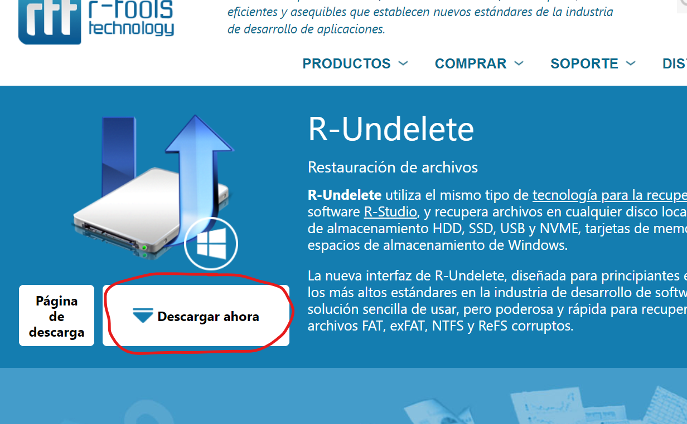
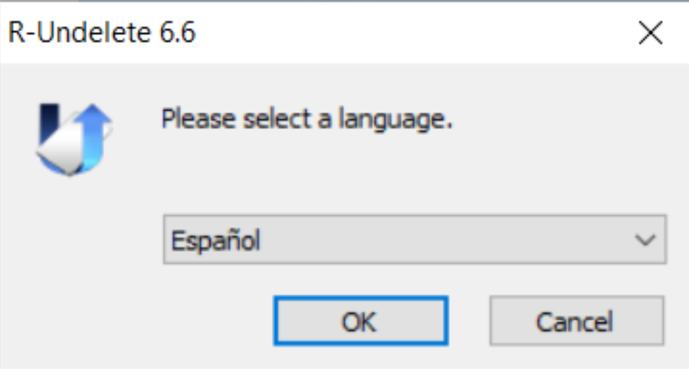
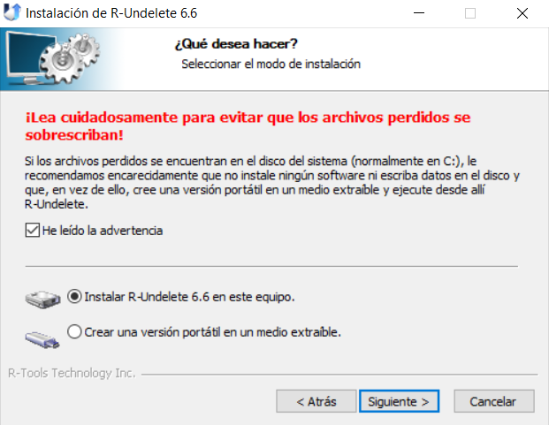
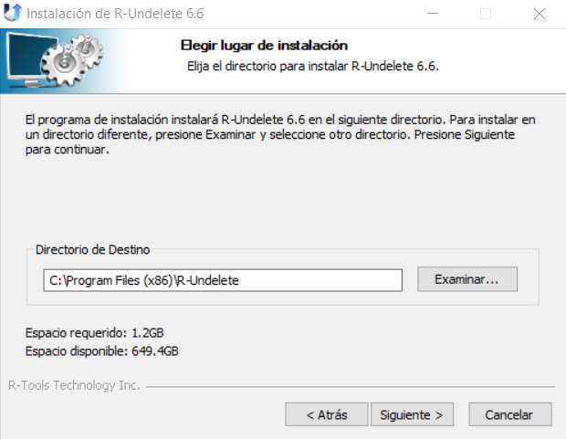

R-Undelete es una versión gratuita de R-Studio que utiliza e mismo tipo de tecnología para recuperación de datos. Para descargarlo, debemos hacer click en este botón:
Le aparecerá una ventana emergente donde podrá elegir la localización del instalador de R-Undelete en su dispositivo. Seguidamente, le daremos doble click al archivo descargado para iniciar la instalación. Lo primero será seleccionar el idioma
Aparecerá la siguiente advertencia, por la cual nos recomienda instalar el programa en un medio extraíble para no sobreescribir los datos del disco del sistema. En este caso, lo instalaré en el disco local C:
Pulsamos siguiente y, después, nos dejará elegir la ruta de instalación. En mi caso dejaré la ruta que aparece por defecto.
Por último, podremos elegir donde descargar el acceso directo del programa. En mi caso no descargaré acceso directo. Para concluir la instalación, hacemos click en "Instalar"